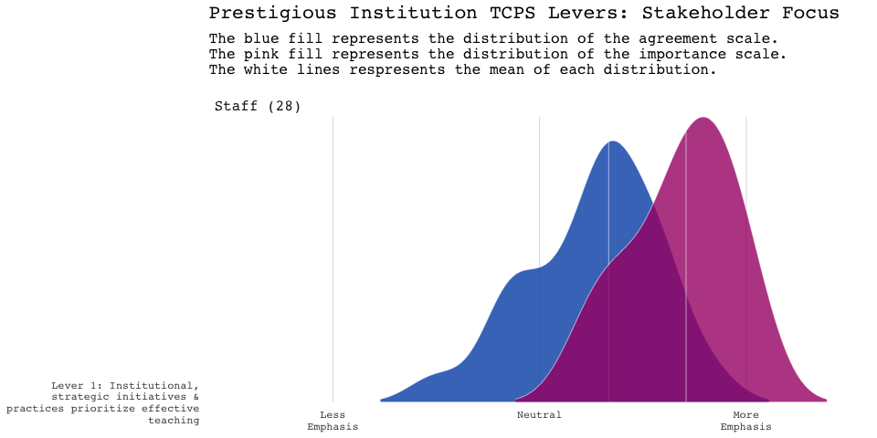
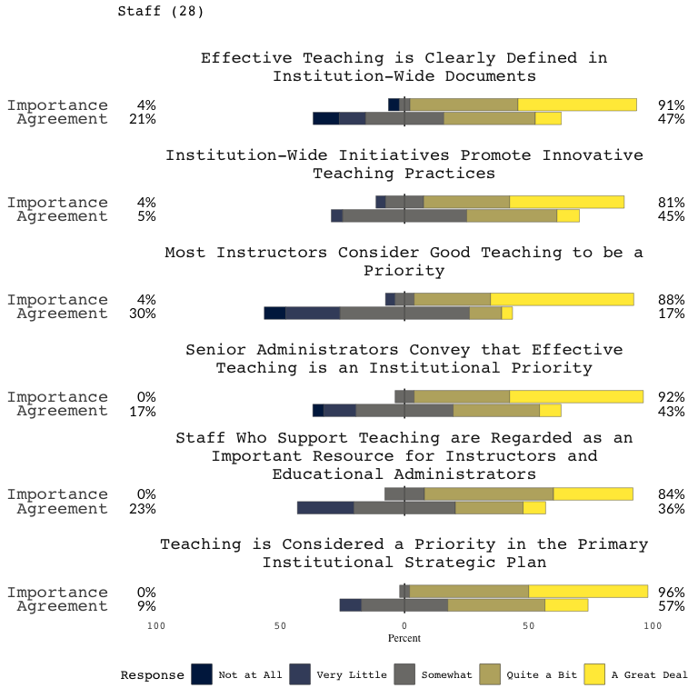

The goal of tcps package is to provide functionality to tidy and visualize the results of running the teaching culture perception survey at an institution.
Using the tcps package
The package is freely available and requires R to be installed as well. R is a free open-source software available at https://www.r-project.org/. It is a command line program, but there are many high quality and free interactive development environments (IDE) one can use. Rstudio https://www.rstudio.com is a highly recommended IDE to download and install.
To recap:
- Download & Install R https://www.r-project.org/
- Download & Install RStudio https://www.rstudio.com
- Launch RStudio (which will start up an instance of R as well)
Using this package
There is a vignette in the package that walks through the use of the tcps package
Quick Features
Importing your data
Reading in properly prepared output from survey platforms, and creating the levers.
library(tcps)
# Load some sample data!
file <- tcps_sample("staff_sample.xlsx")
tcps_data <- tcps_read_excel(file)
head(tcps_data)
#> # A tibble: 6 x 42
#> part_num scale survey lever1 lever1_q1 lever1_q2 lever1_q3 lever1_q4 lever1_q5
#> <int> <chr> <chr> <dbl> <dbl> <dbl> <dbl> <dbl> <dbl>
#> 1 1 agre… staff NA NA NA NA NA NA
#> 2 1 impo… staff NA NA NA NA NA NA
#> 3 2 agre… staff 3.33 4 4 4 3 2
#> 4 2 impo… staff NA NA NA NA NA NA
#> 5 3 agre… staff NA NA NA NA NA NA
#> 6 3 impo… staff 4.5 4 5 4 4 5
#> # … with 33 more variables: lever1_q6 <dbl>, lever2 <dbl>, lever2_q2 <dbl>,
#> # lever2_q3 <dbl>, lever2_q4 <dbl>, lever2_q5 <dbl>, lever3 <dbl>,
#> # lever3_q1 <dbl>, lever3_q3 <dbl>, lever3_q4 <dbl>, lever3_q5 <dbl>,
#> # lever3_q6 <dbl>, lever3_q7 <dbl>, lever4 <dbl>, lever4_q1 <dbl>,
#> # lever4_q2 <dbl>, lever4_q3 <dbl>, lever4_q4 <dbl>, lever4_q5 <dbl>,
#> # lever4_q6 <dbl>, lever5 <dbl>, lever5_q1 <dbl>, lever5_q2 <dbl>,
#> # lever5_q3 <dbl>, lever5_q4 <dbl>, lever5_q5 <dbl>, lever5_q6 <dbl>,
#> # lever6 <dbl>, lever6_q1 <dbl>, lever6_q2 <dbl>, lever6_q3 <dbl>,
#> # lever6_q4 <dbl>, lever6_q6 <dbl>Visualizing Levers & Scales
Provides functions to visualize the TCPS levers….
tcps_lever_ridgeline(tcps_data, name = "Prestigious Institution", lever = "lever1")
#> Picking joint bandwidth of 0.261
as well as functionality to visualize the scales/questions that comprise the lever.

Summary Statistics
You can obtain simple summary statistics by scale, survey type, lever and question.
tcps_summary_stats(tcps_data)
#> # A tibble: 10 x 42
#> # Groups: scale, survey [2]
#> scale survey measure lever1 lever1_q1 lever1_q2 lever1_q3 lever1_q4 lever1_q5
#> <chr> <chr> <chr> <dbl> <dbl> <dbl> <dbl> <dbl> <dbl>
#> 1 agre… staff mean 3.52 3.75 3.83 3.42 3.71 2.96
#> 2 agre… staff median 3.67 4 4 3 3.5 3
#> 3 agre… staff n 13 5 6 6 5 6
#> 4 agre… staff sd 0.638 0.989 1.52 1.10 0.999 1.12
#> 5 agre… staff sem 0.177 0.442 0.622 0.449 0.447 0.458
#> 6 impo… staff mean 4.37 4.5 4.44 4.46 4.23 4.42
#> 7 impo… staff median 4.42 4.5 5 5 4 5
#> 8 impo… staff n 13 4 5 3 4 4
#> 9 impo… staff sd 0.510 0.648 1.00 0.647 0.863 0.809
#> 10 impo… staff sem 0.141 0.324 0.449 0.373 0.431 0.404
#> # … with 33 more variables: lever1_q6 <dbl>, lever2 <dbl>, lever2_q2 <dbl>,
#> # lever2_q3 <dbl>, lever2_q4 <dbl>, lever2_q5 <dbl>, lever3 <dbl>,
#> # lever3_q1 <dbl>, lever3_q3 <dbl>, lever3_q4 <dbl>, lever3_q5 <dbl>,
#> # lever3_q6 <dbl>, lever3_q7 <dbl>, lever4 <dbl>, lever4_q1 <dbl>,
#> # lever4_q2 <dbl>, lever4_q3 <dbl>, lever4_q4 <dbl>, lever4_q5 <dbl>,
#> # lever4_q6 <dbl>, lever5 <dbl>, lever5_q1 <dbl>, lever5_q2 <dbl>,
#> # lever5_q3 <dbl>, lever5_q4 <dbl>, lever5_q5 <dbl>, lever5_q6 <dbl>,
#> # lever6 <dbl>, lever6_q1 <dbl>, lever6_q2 <dbl>, lever6_q3 <dbl>,
#> # lever6_q4 <dbl>, lever6_q6 <dbl>Reporting
There is also functions to produce a boilerplate word document report (across all groups: Staff, Faculty and Students) simply by providing a path to a directory where each prepared file resides.
Using the GUI
To help with those new to R, a GUI interface application (built with the shiny package) can be used by calling tcps_gui() at the command line after loading the tcps package.